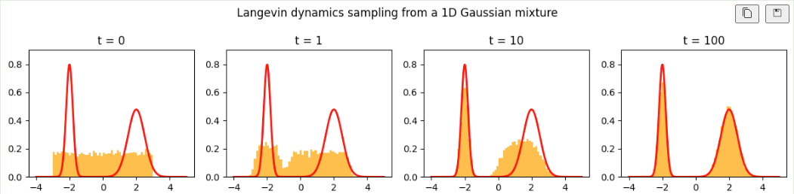

Sampling from a Distribution¶
Understanding the process of sampling is crucial in probability and statistics. Sampling is not merely picking random points in space; it involves generating samples that statistically resemble a given probability distribution. This is essential for tasks such as Monte Carlo simulations, statistical modeling, and machine learning.
1. Key Concepts in Sampling¶
-
Representation of the Distribution: The samples should reflect the underlying probability distribution. For example, if a distribution has a high density in a specific region, more samples should appear in that region.
-
Convergence to the Distribution: As the number of samples increases, the empirical distribution (e.g., a histogram) should converge to the theoretical probability distribution.
-
Applications: Accurate sampling is vital for simulations and models where results depend on how well samples represent the true distribution.

That is to say, we want to give higher priority to sample that have higher probability.
Next, if given a density function, how to sample it. Unlike the VAE, Gan which directed generated an example. In the energy based model, we only have the probability density function (precisely, we have the unnormalized probability density function), how can we sample from it?
Generally, sample from a probability distribution can be done in this way
- sample from a uniform distribution
- map the sample to the inverse of the CDF function
than we obtained the samples that follow the given probability distribution. Here CDF is the cumulative distribution function, that is
2. sample from a simple gaussian distribution¶
In python, sample the gussian distribution maybe simple as the following.
2.1 Transformations from Uniform Distributions¶
While Gaussian distributions can be sampled directly, they can also be derived from uniform distributions using transformations like the Box-Muller method:
This method is efficient because it avoids the need for the inverse CDF, which does not have a closed form for Gaussian distributions.
2.2 Sampling from Complex Distributions¶
For complex distributions, especially with unnormalized probability density functions (as in Energy-Based Models), sophisticated methods are needed:
- Markov Chain Monte Carlo (MCMC): A broad class of algorithms for sampling from complex distributions.
- Langevin Dynamics: Combines gradient descent with noise to explore probability spaces.
- Hamiltonian Monte Carlo (HMC): Uses physical dynamics to efficiently sample from high-dimensional distributions.
3. Markov Chain Monte Carlo (MCMC)¶
MCMC is a broad class of algorithms used to draw samples from complex probability distributions, especially when direct sampling or classical numerical integration is difficult. The main idea behind MCMC is:
- We want samples from a target distribution Suppose we have a probability distribution \(\pi(x)\) (often given up to a normalization constant, e.g., \(\pi(x)\propto e^{-E(x)}\)), and we want to estimate expectations like
In many applications (e.g., Bayesian inference), \(\pi\) may be high‐dimensional or have no closed‐form normalizing constant, making direct sampling infeasible.
-
Construct a Markov Chain whose stationary distribution is \(\pi\) MCMC methods build a Markov chain \(X_0, X_1, X_2,\dots\) with a transition rule \(X_{t+1}\sim T(\cdot\mid X_t)\). The key is to design \(T\) so that if \(X_t\) is distributed according to \(\pi\), then \(X_{t+1}\) is also distributed according to \(\pi\). Under suitable conditions (ergodicity), the chain then converges to \(\pi\) from a wide range of initial states, and the samples \(X_0, X_1, \dots\) “mix” throughout the support of \(\pi\).
-
Samples from the chain approximate samples from \(\pi\)
If the Markov chain is ergodic and aperiodic, then for large \(t\), the distribution of \(X_t\) is close to \(\pi\). We can compute empirical averages using \(\frac{1}{N}\sum_{t=1}^N f(X_t)\) to estimate \(\mathbb{E}_{\pi}[f]\). The law of large numbers for Markov chains implies that, as \(N\to\infty\), these empirical averages converge to the true expectation (under mild regularity conditions).
Popular MCMC approaches include:
-
Metropolis–Hastings (MH) : Propose a new sample from a proposal distribution \(q(\cdot\mid X_t)\) and accept or reject it based on a Metropolis acceptance probability that ensures \(\pi\) is the stationary distribution.
-
Gibbs sampling : Update each component in turn from its conditional distribution, often used when conditionals of \(\pi\) are simpler than the joint.
4. Hamiltonian Monte Carlo (HMC)¶
Hamiltonian Monte Carlo (HMC) is a specialized MCMC method designed to tackle high‐dimensional sampling problems more efficiently than basic Metropolis–Hastings or Gibbs sampling, especially when \(\pi(x)\propto e^{-E(x)}\) for some smooth potential \(E(x)\). Its key ingredients:
- Incorporate “physical” dynamics HMC treats the target variable \(x\) as a position in a physical system and introduces an auxiliary momentum variable \(p\). Together, \((x,p)\) evolve according to (fictitious) Hamiltonian dynamics governed by a Hamiltonian function
where \(M\) is a mass matrix (often the identity).
- Hamiltonian flow Starting from \((x,p)\), HMC simulates the continuous‐time Hamiltonian equations:
These flow equations conserve the Hamiltonian \(H(x,p)\). In practice, one discretizes this flow via a symplectic integrator (e.g., leapfrog method), which approximates the true continuous trajectory but still preserves many beneficial geometry properties.
-
Metropolis correction After simulating the Hamiltonian system for a certain number of leapfrog steps, HMC performs a Metropolis acceptance/rejection step:
-
Propose a new state \((x^\star,p^\star)\) by integrating from \((x,p)\).
-
Accept or reject based on the Metropolis probability involving the change in Hamiltonian:
This ensures the Markov chain has \(\pi(x)\cdot\mathcal{N}(p\mid 0,M)\) as its invariant distribution in the extended space.
- Efficient exploration Because Hamiltonian trajectories can travel long distances in the state space without random walk behavior, HMC reduces the random walk inefficiency often seen in simpler MCMC methods. This often leads to better mixing and more decorrelated samples, especially in high dimensions.
Summary of HMC steps
-
Sample momentum \(p\sim \mathcal{N}(0,M)\) to get \((x,p)\).
-
Simulate Hamiltonian flow with a symplectic integrator (e.g., leapfrog) for a chosen number of steps \(L\) and step size \(\epsilon\). This yields a proposal \((x^\star, p^\star)\).
-
Accept/Reject \((x^\star,p^\star)\) using the Metropolis probability \(\alpha\). If accepted, set \(X_{t+1}=x^\star\); else remain at \(X_{t+1}=x\).
-
Repeat for many iterations.
4.1 References & Further Reading¶
- MCMC in general :
-
Chib, S. and Greenberg, E. (1995). Understanding the Metropolis–Hastings Algorithm. The American Statistician.
-
Gilks, W. R., Richardson, S., & Spiegelhalter, D. J. (1995). Markov Chain Monte Carlo in Practice. Chapman & Hall.
-
Hamiltonian Monte Carlo :
-
Duane, S., Kennedy, A. D., Pendleton, B. J., & Roweth, D. (1987). Hybrid Monte Carlo. Physics Letters B.
-
Neal, R. M. (2011). MCMC Using Hamiltonian Dynamics. In Handbook of Markov Chain Monte Carlo (eds S. Brooks, et al.).
-
Betancourt, M. (2018). A Conceptual Introduction to Hamiltonian Monte Carlo.
In short, MCMC is the backbone of sampling from complicated distributions when direct sampling is infeasible. Hamiltonian Monte Carlo refines this idea by incorporating physical dynamics to move quickly through the space, often yielding more efficient sampling in high‐dimensional problems.
5. Langevin Dynamics¶
5.1 1. Definition¶
Langevin Dynamics Sampling is a sampling method based on Stochastic Differential Equations (SDE). It is used to sample from high-dimensional probability distributions \(p(x) \propto e^{-E(x)}\). The core idea is to add stochastic noise to the deterministic gradient descent process, ensuring a balance between exploration and exploitation, ultimately achieving the desired distribution.
5.2 2. Core Principles¶
-
Physical Perspective : Derived from particle motion, where \(E(x)\) represents the particle's potential energy (drift term), and random thermal noise (diffusion term) drives its movement.
-
Mathematical Perspective : Designed as a random process to enable samples to converge to the target distribution \(p(x)\).
-
Key Components :
-
Gradient Descent : Following the negative gradient of \(E(x)\), which guides the particle toward areas of lower energy (higher probability density).
-
Random Noise : Adding stochastic perturbations to prevent the algorithm from getting stuck and ensure sufficient exploration.
One also need to note that the converge to the final target distribution is not depended on the initial status, that means we can sample the initial status from any distribution.
5.3 3. Discrete Formulation¶
Continuous Langevin Dynamics
Where:
-
\(x_t\): Position of the particle at time \(t\).
-
\(W_t\): Standard Wiener process (Brownian motion), satisfying \(W_t \sim \mathcal{N}(0, t)\).
Discrete Update Rule (Practical Implementation):
Where \(\epsilon\) is the step size, controlling the trade-off between convergence speed and accuracy.
5.4 4. Proof: Target Distribution as the Stationary Distribution¶
Goal : Prove that the stationary distribution of Langevin Dynamics is \(p(x) \propto e^{-E(x)}\).
Tool : Fokker-Planck Equation (Describes the evolution of probability density under a stochastic process).
- \(p(x)\) is a stationary solution
According to Fokker-Planck Equation:
the last second equation comes from
- Prove \(p(x)\) is a unique stationary distribution
Define the relative entropy
where \(p(x,t)\) is the density function in time \(t\) according to the Langevin Dynamics.
Compute its time derivative, we have
This shows \(p(x,t)\) decreases monotonically and is zero only when \(p(x,t) = p(x)\).
5.5 5. Application Scenarios¶
-
Statistical Sampling : Simulates sampling from high-dimensional distributions.
-
Bayesian Inference : Samples from posterior distributions \(p(\theta|D)\) in Bayesian models.
-
Generative Models : Used in methods like DDPM (Denoising Diffusion Probabilistic Models) for image synthesis.
-
Optimization : Combines stochastic noise with gradient-based optimization (e.g., Stochastic Gradient Langevin Dynamics, SGLD).
5.6 6. Implementation Steps and Hyperparameter Tuning¶
Implementation Process :
-
Initialization : Start with a random initial point \(x_0\).
-
Iterative Updates :
- Stopping Criterion : Stop when the algorithm converges or sufficient samples are collected.
Hyperparameter Tuning :
-
Step Size (\(\epsilon\)) : Should ensure convergence while balancing efficiency and stability (commonly uses an annealing strategy).
-
Noise Level : Increase \(\sqrt{2\epsilon}\) to improve exploration but avoid excessively large variances.
-
Regularization : Use adaptive methods (e.g., SGLD) to accelerate convergence.
Notes :
-
May fail for ill-conditioned cases; alternative methods like Metropolis-Hastings or MALA can be used.
-
Works under smoothness assumptions of the target distribution \(E(x)\) (requires Lipschitz continuous gradients).
5.7 7. Example Code (Python Code)¶
- Code
experiment/langevin_dynamics_simulation.ipynb
{kind=link}
5.8 8. Comparison with Other Sampling Methods¶
| Method | Requires Gradients | Accept/Reject Step | Applicable Scenarios |
|---|---|---|---|
| Metropolis-Hastings | No | Yes | General-purpose, less efficient |
| HMC (Hamiltonian MC) | Yes | Yes | High efficiency for correlated distributions |
| Langevin Dynamics | Yes (Pure SDE) | No | Efficient for high-dimensional sampling |
5.9 Conclusion¶
Langevin Dynamics Sampling introduces stochasticity guided by gradients, enabling efficient sampling from high-dimensional distributions. It is a powerful tool in generative modeling, Bayesian inference, and optimization algorithms. The theoretical guarantee relies on the Fokker-Planck Equation ensuring the target distribution, while practical tuning of step size and noise level balances convergence and efficiency.
This simulation starts from a uniform distribution and converges to a Gaussian mixture, illustrating the effectiveness of Langevin dynamics in sampling from complex distributions.
6. Alternative Sampling Dynamics¶
A question is that, why should we sample from \(p(x)\) should follow LD ? Is there any other way?
He we introduce various stochastic differential equations (SDEs) designed to generate the steady-state distribution \(p(x) \propto e^{-E(x)}\). By learning the appropriate potential \(E(x)\), these SDE-based methods can model the target distribution, making them suitable for generative tasks, optimization, and more. Below are common dynamics and SDE models:
6.1 1. Underdamped Langevin Dynamics¶
Definition :
Introduces momentum \(v\), modeling the dynamics of particles in a potential field. The equations are:
where \(\eta > 0\) is the friction coefficient.
Features :
-
Momentum introduces inertia, counteracting the "random walk" effect of overdamped Langevin dynamics.
-
Converges to the stationary distribution \(p(x) \propto e^{-E(x)}\).
Applications :
-
Sampling methods like Hamiltonian Monte Carlo (HMC).
-
Simulating particle dynamics in physical systems.
6.2 2. Regularized X-SDE¶
Definition :
For a smooth potential \(E(x)\), introduces regularization terms. The SDE is:
where \(p(x) \propto e^{-E(x)}\).
In the Regularized X-SDE framework, the drift term \(b(x)\) and diffusion term \(g(x)\) are typically designed based on the energy function \(E(x)\) to ensure that the process samples from the desired probability distribution \(p(x) \propto e^{-E(x)}\). Their relationships are as follows:
6.2.1 2.1. Drift Term \(b(x)\)¶
-
The drift term \(b(x)\) represents the deterministic component that drives the system towards lower-energy regions.
-
In standard Langevin Dynamics , the drift is given by:
- However, in Regularized X-SDE , \(b(x)\) can be modified to incorporate additional prior knowledge, regularization, or auxiliary variables to improve sampling efficiency.
6.2.2 2.2. Diffusion Term \(g(x)\)¶
-
The diffusion term \(g(x)\) controls the stochasticity of the process.
-
In standard Langevin Dynamics, the noise term follows:
where \(I\) is the identity matrix.
- In Regularized X-SDE , \(g(x)\) can be spatially varying, meaning:
where \(g(x)\) is a function that may depend on the energy landscape \(E(x)\), allowing for adaptive noise scaling .
6.3 2.3. Generalized Regularized X-SDE Form¶
A common form of the Regularized X-SDE is
where:
-
\(-\nabla E(x)\) ensures the process moves towards lower-energy regions.
-
\(g(x)\) can be tuned to balance exploration and exploitation, helping to escape local minima.
6.4 2.4. Practical Adjustments¶
- Preconditioned Langevin Dynamics (PLD): \(b(x)\) is modified as:
where \(M(x)\) is a preconditioning matrix, improving convergence speed.
- Adaptive Noise Scaling: \(g(x)\) can be chosen to control the amount of stochasticity, improving mixing properties.
There are few main popular choise of \(g(x)\),
6.4.1 2.4.1 Constant Diffusion (Standard Langevin Dynamics)¶
6.4.2 2.4.2 Preconditioned Diffusion¶
where \(P(x)\) is a preconditioning matrix (positive definite). Some choices of \(P(x)\)
- Diagonal Preconditioning \(P(x) = \text{diag} (\gamma_1, \gamma_2, ...,\gamma_d)\) depends on the local curvature of \(E(x)\)
- Inverse Hession Approximation: \(P(x) \approx \left( \nabla^2 E(x) + \epsilon I \right)^{-1}\),(helps navigate high-curvature regions).
6.4.3 2.4.3 Energy-Based Diffusion (Gradient Magnitude Scaling)¶
where \(\alpha\) and \(\beta\) are hyperparameters.
-
Intuition: Increases noise in high-energy regions, encouraging exploration.
-
Use Case: Helps escape local minima in multi-modal distributions.
6.4.4 2.4.4 Annealed Langevin Dynamics (Temperature-Based Diffusion)¶
where \(T(x)\) is a temperature schedule such as:
-
Effect: Decreases noise over time, allowing for exploration in early iterations and exploitation in later iterations.
-
Use Case: Useful in Bayesian inference and generative modeling.
6.4.5 2.4.5. Score-Based SDE (Diffusion Models)¶
where $\(\sigma(t)\)$ follows a decreasing function, such as:
- Use Case: Used in diffusion models for generative modeling.
Summary Table
| Term | Standard Langevin Dynamics | Regularized X-SDE |
|---|---|---|
| b(x) | \(-\nabla E(x)\) | Can include regularization, preconditioning |
| \(g(x)\) | \(\sqrt{2} I\) | Adaptive function \(b(x)\), may depend on xxx |
6.5 3. Time-Reversal SDE (Reverse Diffusion Process)¶
Definition :
Given a forward SDE:
the reverse-time SDE has the form:
where \(p(x, t)\) is the time-dependent probability density.
Applications :
-
Generative models (e.g., DDPM, score-based models).
-
Denoising diffusion models for approximating \(\log p(x)\).
In this method, we need to construct a path that maps from the original data distribution to some easy distribution, and then use the revserse process (as defined in the SDE) to sample from target data distribution.
6.6 4. Preconditioned Langevin Dynamics¶
Definition :
Introduces a preconditioning matrix \(P(x)\) to accelerate convergence which is a special case of regularized X-SDE. The SDE is:
where \(P(x)\) is symmetric and positive definite.
Features :
-
Efficient sampling when \(P(x)\) adapts to the geometry of \(E(x)\).
-
Extends to include Riemannian manifold-based methods.
Preconditioned SDE (or Preconditioned Langevin Dynamics) is used to improve sampling efficiency and convergence speed in stochastic optimization and generative modeling. The main idea is to introduce a preconditioning matrix \(P(x)\) that adapts the sampling dynamics to the local geometry of the energy function \(E(x)\). This helps navigate complex landscapes more effectively, especially when different directions in the space have different scales of variation.
Where Does the Idea Come From? The idea comes from natural gradient methods and Riemannian manifold-based optimization , where the metric tensor is used to adapt learning rates per dimension. In standard Langevin dynamics:
-
The step size in each direction is uniform , which can lead to slow mixing if the energy landscape has anisotropic (different scaling in different directions) curvature.
-
In high-dimensional spaces, some directions have strong gradients, while others are almost flat, causing inefficient exploration. By introducing \(P(x)\) , we scale the gradient and noise adaptively:
where \(P(x)\) is a positive definite symmetric matrix that scales updates differently in each direction .
Usage and Simple Example
Let’s consider a simple case where:
This means that we scale each coordinate independently .
Example: Sampling from an Anisotropic Gaussian
Consider an energy function for a Gaussian distribution:
where \(A\) is a diagonal matrix:
This means:
-
The first dimension has stronger curvature (steeper gradient).
-
The second dimension has weaker curvature (flatter gradient).
Using standard Langevin dynamics:
-
The first component moves very slowly due to large gradients.
-
The second component moves faster, leading to inefficient exploration.
Applying Preconditioning
Now, we apply a preconditioner:
which leads to:
Since \(P(x) A = I\), the dynamics become:
which normalizes the scales in all directions , making the sampling more efficient
6.7 Summary of SDE Models¶
| SDE Type | Core Concept | Advantages | Applications |
|---|---|---|---|
| General Langevin Dynamics | Basic diffusion model | Theoretical clarity | Generative modeling |
| Underdamped Langevin Dynamics | Adds momentum | Faster convergence | Sampling, optimization |
| Preconditioned Langevin Dynamics | Preconditioning matrix for geometry | Accelerates convergence | Bayesian inference |
| Coupled SDE-ODE | Balance of stochastic/deterministic | Stable dynamics | Scientific computing |
| Reverse-Time SDE | Diffusion process reversal | High-quality generation | Generative models |
6.8 Learning Objectives¶
Why do different SDE formulations yield the same equilibrium distribution?
Mathematical Tool :
Fokker-Planck equation
For the SDE \(dx = b(x) dt + \sigma(x) dW_x\), the Fokker-Planck equation is:
where \(p(x, t)\) is the probability density, \(b(x)\) the drift term, and \(\sigma(x)\) the diffusion term. Stationary solution \(p(x)\) satisfies:
By adjusting \(b(x)\) and \(\sigma(x)\), one can achieve the desired stationary distribution.
6.9 Practical Recommendations¶
-
Choose the SDE based on your specific problem and computational constraints.
-
For generative tasks, consider time-reversal SDEs or preconditioned Langevin dynamics.
-
When optimizing, balance between exploration (stochastic) and exploitation (deterministic).
7. Details of Annealed Langevin Dynamics Sampling¶
7.1 1. Definition¶
Annealed Langevin Dynamics Sampling is a stochastic sampling method that incorporates temperature annealing. It enhances the system's ability to explore the target space, balancing between exploration (searching globally) and exploitation (refining locally).
7.2 2. Core Principles¶
-
Annealing : Introduces a temperature schedule \(T(t)\), which controls the degree of randomness (higher temperatures lead to larger noise, encouraging exploration; lower temperatures reduce noise for refined optimization).
-
Stationary Distribution : Gradually transitions the sampling distribution towards the target distribution \(p(x) \propto e^{-E(x)}\) by reducing the temperature.
7.3 3. Mathematical Formulation and Derivation¶
The dynamic form of Annealed Langevin Dynamics is:
where:
-
\(T(t)\): Temperature schedule (e.g., exponential decay \(T(t) = T_0 e^{-\beta t}\), or other schedules like polynomial decay \(T_k = T_0 / (1 + k)\)).
-
Noise term: \(\sqrt{2 T(t)} dW_t\) ensures randomness at each step.
The discrete iteration formula becomes:
where \(\epsilon\) is the step size, and \(\xi_k\) is Gaussian noise.
7.4 4. Temperature Scheduling Design¶
-
Exponential Decay : \(T_k = T_0 \cdot \gamma^k\), where \(0 < \gamma < 1\).
-
Polynomial Decay : \(T_k = T_0 / (1 + k)^\alpha\), where \(\alpha > 0\).
-
Adaptive Scheduling : Adjust \(T_k\) based on the sampling performance (e.g., adaptively reduce noise if the acceptance rate decreases).
Key parameters:
-
Initial Temperature \(T_0\) : Chosen high enough to explore the search space widely.
-
Final Temperature : Chosen low enough to focus on the target distribution.
-
Step Size \(\epsilon\) : Adjusted to balance accuracy and computational cost.
7.5 5. Theoretical Analysis¶
In the presence of temperature \(T\), the stationary distribution of Langevin Dynamics becomes:
As \(T \to 0\), the distribution transitions to \(p(x) \propto e^{-E(x)}\) (i.e., the target distribution).
Convergence Analysis :
-
Exploration : High temperatures help explore distant regions of the space.
-
Exploitation : Gradual cooling refines the search towards the target distribution.
7.6 6. Applications¶
-
Generative Models : Used in training and optimization tasks for high-dimensional data.
-
Non-Convex Optimization : Combines annealing and dynamics for escaping local minima.
7.7 7. Practical Steps¶
-
Initialization :
-
Set the initial temperature \(T_0\), annealing schedule, step size \(\epsilon\), and random initialization of \(x_0\).
-
Iteration :
-
Compute \(\nabla U(x_k)\).
-
Update \(T_k\) based on the annealing schedule.
-
Perform the update:
-
Convergence :
-
Stop when the temperature reaches a specified threshold or convergence criteria are met.
Python Code Example :
7.8 8. Comparison with Other Methods¶
| Method | Annealing Strategy | Noise Term | Suitable Scenarios |
|---|---|---|---|
| Standard Langevin Dynamics | None | Yes | Single-mode stationary distributions |
| Annealed Langevin Dynamics | Yes | Yes | Multi-modal distributions, generative models |
| Simulated Annealing | Yes | No | Combinatorial optimization, discrete space |
| Hamiltonian Monte Carlo (HMC) | None | No | High-dimensional, parametric distributions |
7.9 9. Advanced Extensions¶
-
SGLD with Annealing : Combines stochastic gradient Langevin dynamics with annealing for large-scale datasets.
-
Adaptive Annealing : Dynamically adjusts the annealing schedule based on feedback (e.g., acceptance rate, energy variance).
7.10 10. Key Considerations¶
-
Temperature Schedule : Improper schedules (e.g., too rapid cooling) may lead to poor convergence.
-
Step Size Selection : Balances convergence speed with numerical stability.
💬 Comments Share your thoughts!